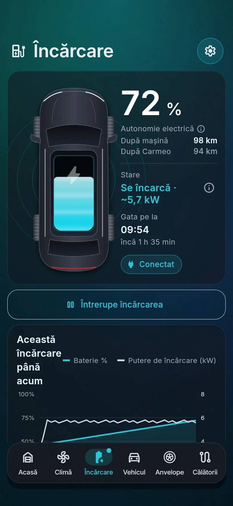
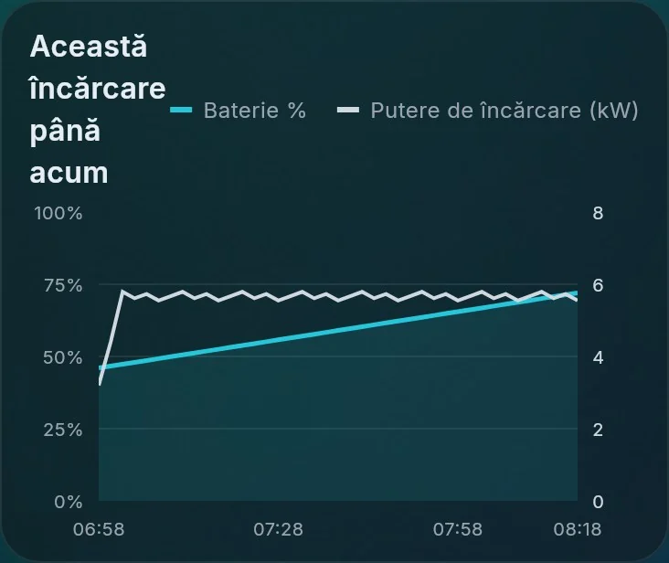
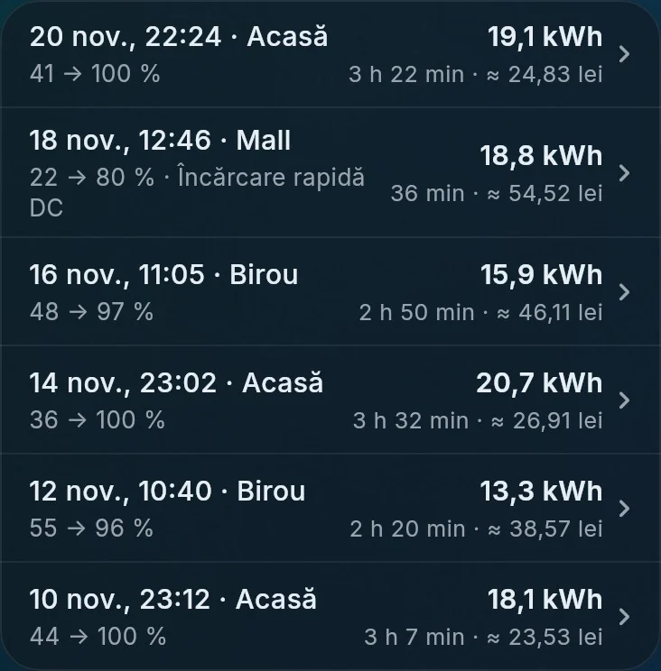
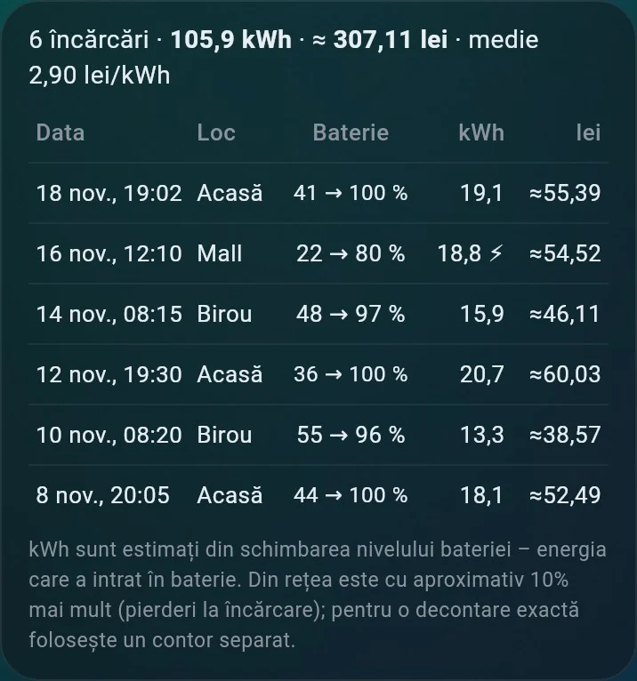

Încărcare
Știi exact cum merge încărcarea.
Puterea în kW în timp real, timpul rămas și fiecare încărcare într-un jurnal – acasă la wallbox sau la o stație publică.


Putere în timp real și timp rămas, direct pe ecranul principal.
Din clipa în care mașina începe să se încarce, ecranul principal arată nivelul bateriei, timpul rămas, ora estimată de finalizare și puterea de încărcare.
- Putere în kW – energia care intră în baterie. Un wallbox arată cu aproximativ 10–15 % mai mult, din cauza pierderilor la încărcare.
- Se actualizează la 2 minute – cât timp mașina se încarcă.
- O notificare – când încărcarea s-a terminat.


Mai întâi curba în timp real, apoi jurnalul.
În timpul încărcării, procentul bateriei și puterea în kW desenează o curbă în timp real. Apoi fiecare încărcare ajunge în jurnal: dată, loc, bateria de la–până la, energia adăugată, durata și costul, AC sau DC. Vezi și programarea de încărcare a mașinii și poți opri o încărcare din aplicație, acolo unde mașina ta permite. Dacă setezi pierderile la încărcare ale mașinii (Setări → Mașină → Prețuri), costul unei încărcări se calculează cu energia luată din rețea – și poți introduce kWh-ul măsurat de wallbox.

Lună de lună, gata de export.
Raportul lunar adună fiecare încărcare pe locuri – energie, cost și prețul mediu pe kWh – și îl exportă ca CSV sau PDF.

Urmărește fără să deschizi aplicația.
Pe iPhone, încărcarea rulează ca Live Activity pe ecranul de blocare și în Dynamic Island. Pe Android apare ca notificare live. Widgeturile țin nivelul bateriei la vedere.
- Încărcată până la ținta ta – poți deconecta când vrei.
- Oprită prea devreme – încărcarea s-a oprit înainte de țintă, cu cablul încă introdus.
- Conectată, dar nu se încarcă – cablul este introdus și nu se întâmplă nimic.
Încearc-o pe mașina ta.
Carmeo este gratuit. Intră în grupul de testare deschisă pe iPhone sau Android.